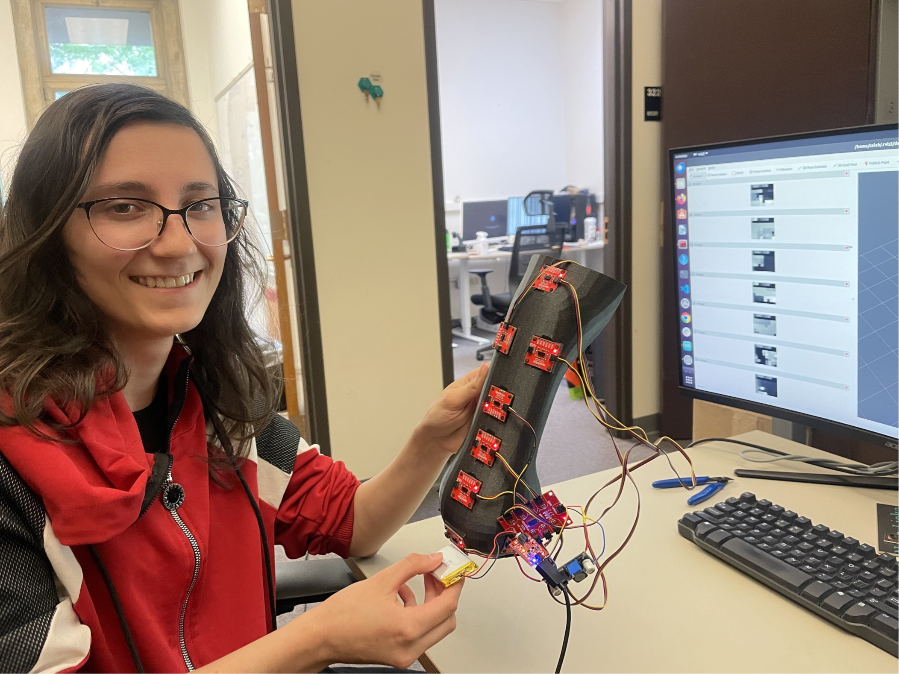
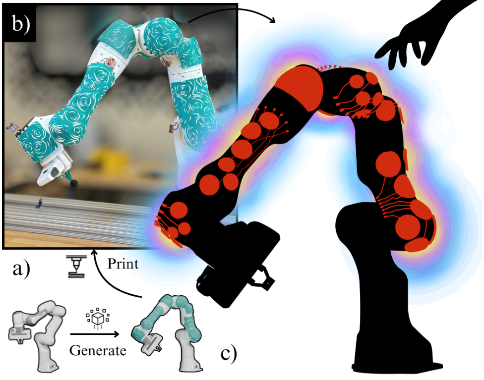
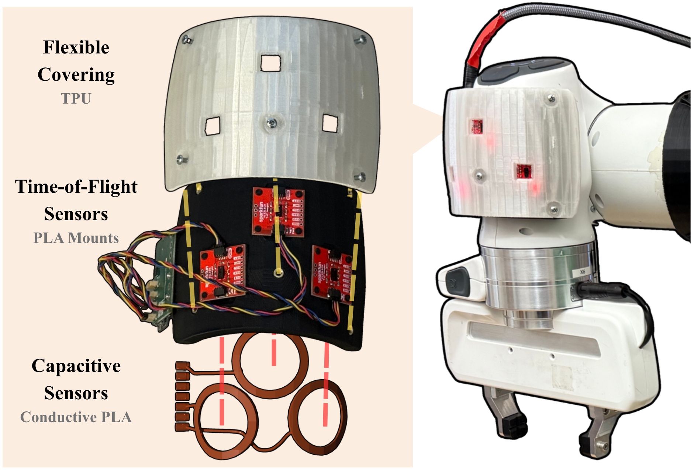
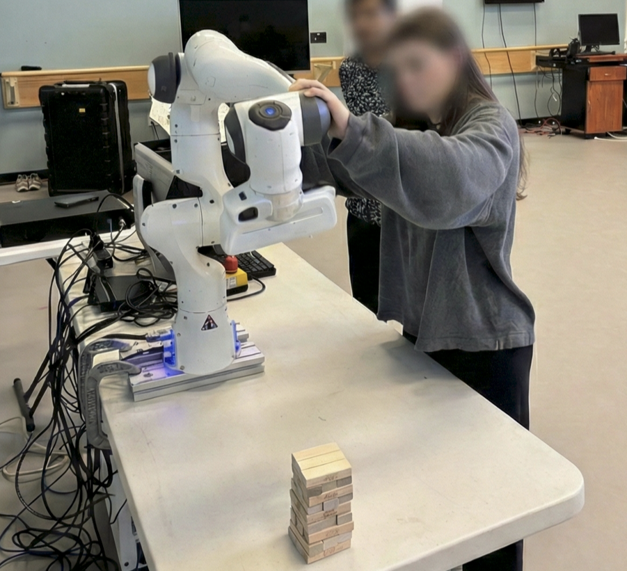
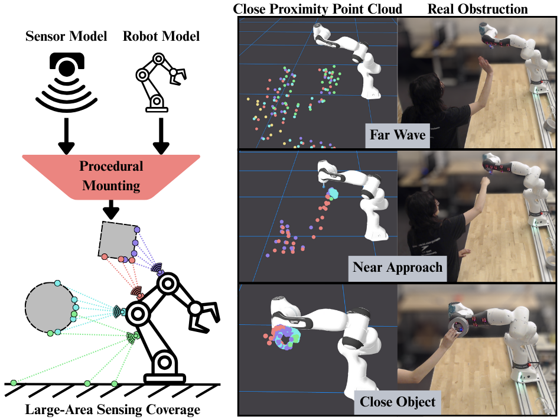

University of Colorado Boulder
Robotics researcher in the HIRO Group, working on 3D-printed tactile and proximity sensing skins for robots.
Advised by Alessandro Roncone.

About
I design and build 3D-printed tactile and proximity sensing skins that give robots a sense of touch and spatial awareness. My work in the HIRO Group spans the full stack from procedural CAD generation and fabrication to ROS 2 integration, data-driven sensor characterization, and real-time collision avoidance control.
I'm also interested in expressive robot motion, human-robot interaction, and lowering the barrier to whole-body sensing for collaborative robots.
Publications

International Conference on Robotics and Automation (ICRA), 2026

ICRA 2026 Workshop: Towards Large-Area Tactile Sensing Skins

ACM/IEEE International Conference on Human-Robot Interaction (HRI), Workshop on Designing Transparent and Understandable Robots, 2026

IEEE-RAS International Conference on Humanoid Robots (Humanoids), Workshop on Advances in Contact-Rich Robotics, 2025
Software
ROS 2 drivers, visualization, and procedural URDF generation for hybrid tactile skin sensors on the Franka Research 3 arm.
ROS Tools URDF DescriptionsXbox 360 controller interface for real-time teleoperation of the Franka Emika Panda arm.
View on GitHub →3D visualization of tactile sensor grid data for debugging and analysis of proximity readings.
View on GitHub →